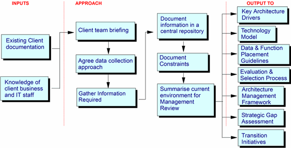

This includes such aspects as installed applications, data, infrastructure and key standards, the
organization, including roles and responsibilities, strategies, policies and plans, development process, systems
management process, and observations about deficiencies, concerns and user satisfaction.
Overview of the Approach

Brief Client Team
If appropriate, produce a package of briefing materials for the client team and distribute beforehand, otherwise use
this introductory material at the start of the first workshop (or end of previous workshop) to set expectations and
understanding. The content should cover:
-
Basics: date, time, place, duration, and so forth
-
Context and purpose of the data gathering activity (why this activity is needed and where it fits in the overall
engagement)
-
Activity objectives and scope/level of detail which will be covered
-
Approach/expected level of participation (how will it actually work, what will be expected of the participants)
-
Initial workshop agenda
Agree Data Collection Approach
Agree on the types of data to be collected - whilst it is often useful to have a complete inventory of the enterprise
applications and databases, or a complete set of IT policies, plans, processes and practices, we are primarily
interested in those that are significantly important to the business. This importance can stem from several factors
such as:
-
Delivery of key business function ("core" or "operational" or "factory" systems)
-
Support for management information systems (MIS)
-
Volumes of transactions
-
Support for multiple products/services
-
Potential to become of strategic importance (e.g. fledgling web-enabled applies and/or their associated
organizational changes)
-
Fundamental to the structure and operation of the IT department
Consider what/who the main sources of information are, whether they are available in documents, the
use of surveys/questionnaires, their audience and type of information which can be collected, the number of interviews
and workshops required and who they should be with.
The main sources of documented material for the inventory of current applications, data and infrastructure will be:
-
Application lists
-
Inventory of key IT systems and data
-
Network diagrams
-
Hardware and software configurations or inventories
The main sources of documented material for IT policies, plans, processes and practices will be:
-
I/T Policy statements
-
IT Procedure and Standards documents
-
I/T Plans and Project descriptions
-
I/T Vision statements
-
Other strategy and planning documents
Produce briefing materials for interviewees and workshop attendees
Gather Information Required
The following information is specifically required to document an enterprise’s IT Environment. This information can
come from a variety of sources. Obviously direct input from IS and business staff will provide a lot of it. Other
sources include; IS developed system profiles, functional specifications, data models and designs, user manuals etc.
Most large enterprises will have undergone a Year 2000 project. These are good potential sources of current system
inventory's or profiles.
When dealing with older legacy systems, which have been built with dedicated data structures, it is not always possible
(or desirable) to separate the database from the applications.
If a previous IT Strategy engagement has been completed this should provide a valuable source of input, especially if
interview summaries still exist.
Run workshops, interviews and surveys as required gathering the following information:
Application inventory
What: Understand and summarize the major business applications supported by the IT organization, and
any supported externally. This should include the key functions, data, infrastructure requirements, systems management
and operational constraints, replacement plans/strategies etc.
Why: Much of the enterprise architecture will be dependent on support and/or migration considerations
for the application portfolio. Most of the constraints and many of the transition projects defined in subsequent
activities can only be defined by understanding the implications for current systems and infrastructure.
How:
Develop a draft list of all applications and databases. This is constructed, from interviews / workshops with business
and IS personnel, supplemented by existing client documentation.
Get both the business and IS staff to prioritize these in order of importance to the success of the enterprise. Compare
these two prioritizations and investigate differences.
With respect to user-developed systems - these are often in existence because the "core" IS systems cannot meet certain
business requirements, however, the inventory should be limited only to the more significant of these, (i.e. don't
include every spreadsheet-based application - use discretion).
For agreed list of applications (those which have been agreed as high priority), review and summarize existing
documentation and conduct interviews with key AD and Operations personnel. Use the following checklist to agree the
information to be documented:
-
The name of the application (from IS and business perspective if different). Include any identifiers or codes
commonly used to refer to the application
-
Brief description of what the application does, (business terms here, not how it works technically)
-
Whether developed in-house, purchased as package, modified package (degree of customization)
-
Business Functions supported
-
Major data categories managed
-
Products / Services it supports
-
Key user groups of the system (and number of users)
-
Locations where used
-
Age of application
-
Number of releases
-
Status (i.e. in development, being rewritten, planned to be decommissioned etc.)
-
Major interfaces
-
Indication of size, (e.g. Lines of code, number of programs, Large/Medium/Small)
-
Platform / Technical environment, including physical platform, hardware, software and network platform, batch Vs
on-line, frequency of operation
-
Language (if bespoke or customized)
-
Volumes of key transactions - including planned growth
-
Responsibility for support (e.g. in-house IS or third party)
-
Ownership of the application
-
Maintenance strategy - including and license and support issues
-
Priority / Importance to business - simple judgment from IS & business.
-
Resilience, availability and performance requirements (in terms of a defined high, medium and low)
-
User satisfaction (will be input to Current IT Assessment activities)
-
Any other additional material of importance to engagement, (e.g. security)
Databases
What: Understand and summarize the major databases /data stores which are of major significance to the
business. This significance will stem from:
-
type of data held
-
volume of data
-
strategic potential for data (e.g. purchasing trends, MIS)
Why: Much of the EA will be dependent on support and/or migration considerations for the databases /
data stores required by the application portfolio. Most of the constraints and many of the transition projects defined
in subsequent activities can only be defined by understanding the implications for current systems and infrastructure.
How:
Develop a draft list of all databases. This is constructed, from interviews / workshops with business and IS personnel,
supplemented by existing client documentation.
Get both the business and IS staff to prioritize these in order of importance to the success of the enterprise. Compare
these two prioritizations and investigate differences.
For the agreed list of databases / data stores, review and summarize existing documentation and conduct interviews with
key AD and Operations personnel. For each database / data store document:
-
Name of database
-
Description of data it holds.
-
Number of records
-
Size of database/data store
-
Major applications updating / accessing the database
-
Scope of data, (i.e. what subset of products, what subset of customers, etc.
-
Age of database
-
Replication information (i.e. how many copies, what locations)
-
What user groups
-
Retention/archiving position
-
Data management/file system technology involved
-
Ownership
-
Priority/importance to the business
Infrastructure status
What: Understand the current IT infrastructure, including desktops, servers, networks, application
development environment, system management environment, etc.
Why: Provides the base information on the installed IT infrastructure. This understanding provides a
key input to a number of follow-on activities:
-
Current IT Assessment - for functional and technical quality
-
Definition of EA Models - which will provide the framework for all future design, development and implementation
activities
-
Architecture Compliance Assessment - to identify areas where major change is implemented
-
The definition of Transition projects, initiatives and plans to implement the newly defined IT Strategy or
Enterprise Architecture, in support of business objectives
How: Review and summarize existing documentation. Conduct interviews with client technical architect,
or appropriate managers. Use the following checklist to agree the information to be documented:
-
Outline diagram of current infrastructure environment(s)
-
In-house or out-sourced
-
Main hardware components
-
Networking and communications
-
Infrastructure by location
-
Supplier details
-
Age and level of support available
-
Technical specifications
-
Systems software supported
-
Maintenance strategy
-
Systems management
-
Capacity planning
-
Availability and resilience
-
Performance and load
-
Security arrangements
-
Purchase/lease details
-
Annual costs
Existing and proposed planned projects
What: Inventory of current and proposed infrastructure and AD projects.
Why: Key to understanding the current project portfolio, as an input to the prioritization of future
transition projects and a transition strategy and plan.
How: Review and summarize existing documentation. Conduct interviews with CIO/IT Director, and main
reports. Interviews with client technical architect.
Application development environment, policies and practices
What: Understand the preferred application development tools, languages and environments. This should
also include operational and test development support requirements. Understand the current approaches and strategy
applied to application development, maintenance, and the management of the AD backlog.
Why: The preferred AD environments, processes, tools and languages will require support in any
architectural model. The suitability of current approaches may raise issues or requirements which will need to be
considered in subsequent transition initiatives and planning activities.
How: Interviews with Application Development management. Review of existing documentation.
Systems management and operations environment
What: Understand the current approaches, strategy and tools applied to systems and network management.
Why: The preferred SM approaches and tools will require support in any architectural model. The
suitability of current approaches may raise issues or requirements which will need to be considered in subsequent
transition initiatives and planning activities.
How: Interviews with Operations Management. Review of existing documentation. Use a simple SM
discipline model to review completeness. This should cover:
-
User Support
-
Service Level management
-
Production Control
-
Monitoring
-
Failure Control
-
Security
-
Change management and control
-
Asset Management, etc.
IT/IS organization and responsibilities
What: Understand and summarize the management structure and organization. Who are the key players?
What are their main areas of responsibility?
Why: The current organizational model may be a key factor in determining the scope of the EA, and the
acceptability of any proposals for processes by which it can be managed. Also, this is important information in
determining who to interview, who should attend workshops etc.
How:
Review existing published organizational charts.
Conduct initial interview with the CIO/IT Director.
Informal discussions with client members of EA team.
Use the following checklist to agree the information to be documented:
-
Reporting structure and personnel
-
Make up of IT department - permanent employees, contractors, out-sourced skills and support
-
Understand who has responsibilities for:
-
-
Planning
-
Procurement
-
Installation
-
Software development
-
Maintenance
-
Administration
-
User support
-
IS planning
-
IT investment planning
-
IT planning process
-
Skills development
Existing IT strategy and plans
What: Understand the current client IT plans and directions, plus any plans for organizational
changes.
Why: This will provide an understanding of the IT strategy inputs which are driving the
architecture requirements, and help to provide prioritization criteria for the any transition projects/initiatives and
plans.
How: Review and summarize existing documentation. Conduct interviews with CIO/IT Director,
senior IT management and client technical architect.
Known IT/IS deficiencies and concerns
Note: This is not an assessment of the IT environment; the objective here is capture known
deficiencies and concerns. These will either be input to subsequent assessment activities (see Strategic Gap
Assessment work product), or will be used as the basis for making observations which should be fed back to the
client sponsor.
What: Log of concerns, worries, issues, moans and groans picked up during workshops, interviews,
and documentation reviews.
Why: This type of information will identify additional requirements and potentially provide an insight
into both tangible and intangible benefits, which may justify subsequent architecture definition activities.
How: Informal notes taken during sessions and reviews, held in a common issues "log".
Document the Information Gathered
Using the detail guidelines above, produce text documents with associated tables and diagrams as appropriate. The
content should cover:
I/T Support for the Business:
Inventory of current applications, data and infrastructure
Summary of key business goals and critical success factors requiring support from I/T, including level of satisfaction
with current I/T support and plans or ideas for improvement.
Current I/T Department: An overview of the current I/T Department organization, roles, and
responsibilities.
I/T Processes: A summary of the I/T processes currently in place.
I/T Deficiencies: A list of stated deficiencies in the current I/T capability (including platforms),
which are responsible for user dissatisfaction - note: the objective here is to note any deficiencies, which have
become apparent during the data gathering activities. This is not the output from an assessment of the current IT
environment. If a more detailed, focused assessment is required, use the guidance in the 'Strategic Gap Assessment'
work product.
List of "givens": A list of technical, organizational and process considerations, which will not be
easily changed. These will affect the definition of transition initiatives and plans to implement the strategy
and architecture.
Summarize documents to extract the key characteristics of the Current IT Environment.
Document interviews and workshops - allow interviewees and workshop participants to review your
material, if appropriate - especially so if there are political situations which need to be carefully managed.
Store all the information gathered in a central repository, which is accessible to the whole team.
Document Architecture Constraints
In this task, any constraints identified should be discussed and highlighted. They should include constraints on
IT policies, plans, organization, data, applications and technical infrastructure imposed by factors such as:
-
Business policies
-
Business and technical requirements
-
Current policies (purchasing, personnel, IT)
-
Limitations of existing technology
-
Givens, such as platform decisions that may not be changed
-
Financial or budgetary constraints
-
Management practices and organization
List constraints: A list of defined constraints should be summarized, documented and included in
any EA overview / executive level presentation.
Document major constraints: The team should discuss major areas of constraint found in the data
gathering and summarization tasks. Those that will impact the architecture should be agreed to and documented
with enough definition to avoid confusion later on.
Discuss and document possible resolutions: In addition to identifying constraints, the team
should begin identifying suitable alternatives or actions to mitigate their impact. These ideas can be captured
separately and used later when developing the architecture models and during component evaluation.
Review constraints with sponsor: The constraints should be validated with the sponsor as soon as
possible. Often perceived constraints will turn out to be an individual's point of view or a single department's
direction. If the discovered constraints seem minor, they can be validated during a sponsor checkpoint
meeting. If there are perceived "show stoppers", it might be wise to review them with the sponsor prior to any
checkpoint meeting.
Note: The project team will have spent a lot of time and effort identifying requirements. The
constraints might be perceived as inhibitors to the project and their morale may be negatively impacted. It is
important to give them feedback from the sponsor validation as soon as possible. Focus their attention on possible
solutions which will overcome the constraints and on the remainder of the project. Review the objectives, scope,
and deliverables of the project and move quickly onto the next work product activities e.g. Current IT Assessment, or
the definition of Key Architecture Drivers.
Summarize the current status and information gathered for presentation to client management
Use diagrams and tables to summarize key information and characteristics in a form, which is suitable for presentation
to client management.
|